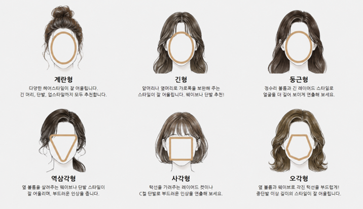
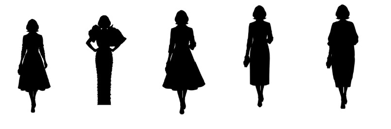
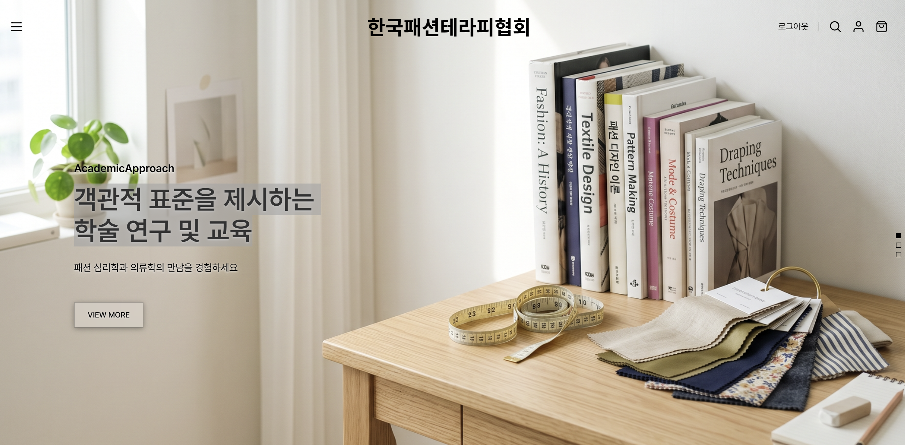

한국패션테라피협회는 2021년 설립된 한국패션테라피진흥원의 교육 성과를 계승한, 국내 최초의 패션테라피 학술 기반 교육기관입니다.
의류학·심리학·미술치료의 융합적 통찰을 바탕으로, 감각이 아닌 '분석 기준'으로 스타일링을 설명하는 7요소·4축 프레임워크와 매체론을 정립해왔습니다.
국내 최고 권위의 교육기관으로서 전문가를 양성하고, 검증된 시스템을 해외로 확장해 나갑니다.
“감이 아닌 분석으로 옷차림 너머의 마음을 읽는다.”
이미지스타일분석™을 통해 누구나 자신의 스타일을 스스로 완성해 나가도록 돕는다.
관계, 자기사랑, 호기심, 타인존중, 성장의 다섯 가지 가치로 구조화하고, 이를 'BLOOM(꽃이 피다)'으로 통합
관계와 자기사랑
호기심
타인존중
성장
한국패션테라피협회의 독자적인 이미지스타일분석™ 프레임워크

개인의 심리와 패션 성향을 연결하는 7단계 진단 시스템입니다. 단순히 겉모습만 꾸미는 것이 아니라, 개인의 체형, 얼굴형, 라이프스타일, 내면의 심리 상태까지 종합적으로 분석하여 진정한 '나다움'을 찾아냅니다.


경기도 용인시 처인구 성산로 667
자연 속 힐링 공간에서 온전한 나를 마주하는 시간을 가져보세요.
대중교통: 용인 공용 버스터미널에서 환승
주차안내: 협회 본관 앞 전용 주차장 무료 이용 가능
문의전화: 010-9692-0410
안녕하십니까, 한국패션테라피협회장 남미화입니다. 저희 협회를 찾아주신 여러분께 진심으로 감사드립니다.
본 협회는 의류학, 심리학, 미술치료를 융합하여 옷차림 속에 담긴 개인의 심리를 읽어내는 국내 최초의 패션테라피 전문 기관입니다.
주관적인 감각에 의존하지 않고, 축적된 상담 사례와 심리 분석을 바탕으로 패션테라피의 객관적인 기준을 제시합니다. 검증된 전문성을 통해 나이와 유행에 흔들리지 않는, 당신만의 스타일을 주도적으로 완성해 나가시도록 돕겠습니다.
협회장 남 미 화